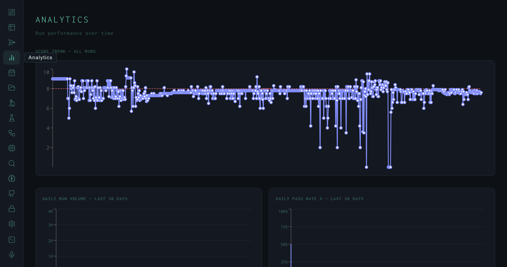
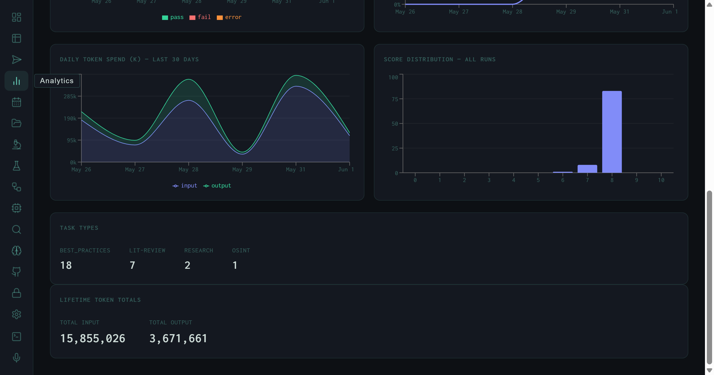

The Analytics View: Score Trends, Token Spend, and Run Distribution
Score trend across all 1,442 runs, daily volume and pass-rate charts, token spend with input/output split, a score distribution histogram, task type breakdown, and 15,855,026 lifetime input tokens.
Individual run metrics answer "did this run work." The Analytics view answers "is the system working." It aggregates every run the harness has ever executed into a set of time-series charts and lifetime counters that surface trends a single-run view can't show — score regression after a prompt change, token spend spikes from a batch job, or the distribution shift that tells you the pass threshold is too easy or too tight.

Score Trend – All Runs. Each point is one run scored 0–10. The dashed red line marks the 8.0 pass threshold. The cluster of drops toward the middle corresponds to early autoresearch experiments with aggressive SYNTH_INSTRUCTION mutations.
Score Trend
The primary chart plots every run's Wiggum evaluator score in chronological order. The y-axis runs 0–10; the dashed threshold line sits at 8.0. A few structural patterns are immediately readable:
- Baseline cluster: The early runs track tightly around 8.0–8.5, reflecting the hand-tuned initial SYNTH_INSTRUCTION before autoresearch began.
- Mutation dip: The cluster of deep drops (some reaching score 1–2) corresponds to autoresearch experiments that aggressively changed the synthesis format — switching to narrative-only, removing structure, or over-constraining output length.
- Recovery: Later runs return to the 8.0 band, reflecting the autoresearch loop reverting bad mutations and the fine-tuned model integrating the best-scoring SYNTH_INSTRUCTION variant.
Daily Charts

Bottom half of Analytics: daily token spend (input green, output blue), score distribution heavily concentrated at score 8, task type counts, and lifetime totals.
Below the score trend, three 30-day charts give a time-windowed view of system health:
Daily Run Volume
Bar chart segmented by pass (green) / fail (orange) / error (amber). Spikes correlate with batch lit-review runs; quiet days reflect targeted single-task experiments.
Daily Pass Rate %
The fraction of runs on each day that scored ≥ 8.0. A sustained drop in pass rate is the earliest signal that a prompt change or model update degraded synthesis quality.
Daily Token Spend (K)
Input (green) and output (blue) token counts per day in thousands. The chart shows twin peaks around May 28 and May 31, each reaching ~285k input tokens — batch lit-review days.
Score Distribution
The score distribution histogram bins all runs by their integer score bucket. The shape is immediately telling: a dominant column at score 8, small counts at 6 and 7, and essentially nothing below 5 outside of the autoresearch mutation experiments.
This distribution shape is by design. The Wiggum evaluator calibrates its rubric so that a well-executed synthesis lands at 8.0 — the pass threshold — and genuinely exceptional outputs reach 8.5–9.0. Scores below 6 indicate structural failures (synthesis loop error, empty output, or a SYNTH_INSTRUCTION so constrained the model produced boilerplate). The concentration at exactly 8 reflects both rubric calibration and the fact that most production runs are lit-review tasks with a consistent quality floor.
The single-bucket spike at score 8 is a calibration signal, not a ceiling. It means the evaluator is consistent, not that outputs are all identical. Per-run detail panels show the variance within that bucket: some 8.0 runs fetch 275 papers and produce 14 KB reports; others fetch 40 and produce 6 KB. The score captures synthesis quality, not volume.
Task Types
The task type panel breaks down all runs by skill route:
The numbers here reflect only the most recent session; the full 1,442-run history includes many more lit-review and best-practices runs. BEST_PRACTICES tasks generate the RLHF preference pairs that feed the fine-tune pipeline — so the 18:7 ratio between best-practices and lit-review is partly a reflection of how much preference data generation was prioritized in this window.
Lifetime Token Totals
At the bottom of the Analytics view, two counters show the cumulative token spend across every run the harness has ever executed:
The ~4.3:1 input-to-output ratio is characteristic of research synthesis workloads: the harness reads far more (paper abstracts, retrieved memory, search results, planning context) than it writes. A lit-review run that fetches 80 papers and produces a 14 KB synthesis might consume 110k input tokens to generate 12k output tokens — a similar ratio at the individual run level.
At 15.8M total input tokens, the harness has consumed the equivalent of roughly 12,000 pages of dense academic text across its lifetime. All of it runs locally on a consumer GPU — no cloud API calls, no per-token billing. The token counters are a reminder of why local inference matters for iterative research workflows: this volume would represent a non-trivial cost at cloud API rates.
The Analytics view updates in real time as new runs complete. Leaving it open during a batch job gives you a live view of pass rate and token spend — useful for spotting early whether a new SYNTH_INSTRUCTION variant is regressing quality before the full batch finishes.
The next layer of the self-improvement story is the Autoresearch view, which shows the experiment log behind the score trend's mutation dip — 40 experiments, 1 keep, and a 3% signal rate.